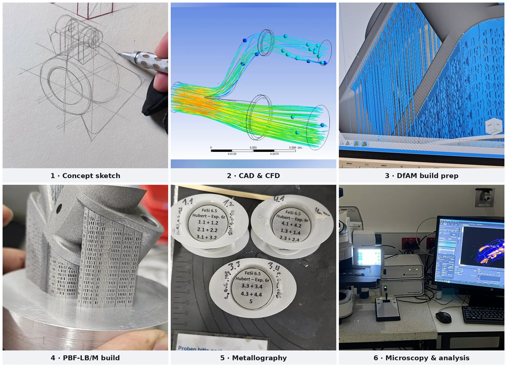

Expertise
Every competency below carries the evidence it rests on. A matrix without evidence is a wish list.
Additive Manufacturing — process & systems
| Competency | Level | Evidence |
|---|---|---|
| PBF-LB/M — Laser Powder Bed Fusion (also L-PBF, SLM) | Advanced | Full workflow ownership on the ALC2 research system: build prep → operation → post-processing → evaluation |
| In-process laser remelting | Specialist | Final-layer and cyclic strategies developed, characterised and published; the subject of my Master's thesis |
| Laser parameter & scan-path optimisation | Advanced | Power, scan speed, hatch spacing, hatch offset, spot diameter, layer thickness, scan rotation — mapped, not guessed |
| Volumetric energy density modelling | Advanced | Process behaviour framed across 78–208 J/mm³; melt-regime boundaries identified quantitatively |
| Melt-regime control (conduction vs. keyhole) | Advanced | Stable conduction-mode remelting achieved and held across a production window |
| Industrial PBF-LB/M systems | Proficient | SLM Solutions SLM 280HL (twin laser, 280 × 280 × 350 mm³) · TRUMPF TruPrint 1000 · ALC2 research system |
| DMLS — Direct Metal Laser Sintering | Advanced | Co-Cr biocompatible sample production across a full L9 parameter array |
| Porosity & defect analysis | Advanced | Keyhole, lack-of-fusion, balling, delamination and molten-edge deposition identified and bounded |
| Support structure & build strategy | Advanced | Platform tilt, sample spacing and thermal-interference management; failed-build reduction |
| Build preparation software | Proficient | Autodesk Netfabb 2024 · Autodesk Machine Control Framework (AMCF) · Materialise Magics |
| Metal powder evaluation | Proficient | Gas-atomised FeSi6.5 (Höganäs AB) · Co-Cr · inert-atmosphere handling at < 200 ppm residual O₂ |
| In-process monitoring | Proficient | Coaxial melt-pool monitoring (hema ICAM weld) integrated on the ALC2 × ICM setup |
| DfAM — Design for Additive Manufacturing | Advanced | Orientation, support and geometry adaptation for metallic builds |
| FDM / polymer AM | Proficient | Prototyping and concept validation |
Materials & characterisation
| Competency | Level | Evidence |
|---|---|---|
| Metallographic preparation | Advanced | Struers Secotom 10 sectioning · Tegramin 30 polishing · SiC 50–2000 grit · 3 µm / 1 µm diamond suspension · Co-m3 etch for Fe-Si |
| Optical microscopy | Advanced | Zeiss Axio Zoom.V16 · Axio Imager.Z2 Vario (to 500×) · ZEN Core quantitative analysis |
| Scanning Electron Microscopy (SEM) | Advanced | Microstructure and defect characterisation |
| Areal surface topography | Advanced | KEYENCE VR-3100 one-shot 3D optical profilometer — Sa, 3D elevation maps, line scans |
| Tactile roughness metrology | Advanced | MarSurf M400 — Ra, Rq, Rz, Rt, measured both parallel and perpendicular to the scan vector |
| Atomic Force Microscopy (AFM) | Proficient | Nanoscale pore and grain distribution analysis (Co-Cr study) |
| Porosity quantification | Advanced | Pore size, pore count per mm², area-fraction porosity via adaptive thresholding; micro-CT and localised mass measurement |
| Grain morphology analysis | Advanced | Columnar-to-equiaxed transition characterisation across remelting intervals |
| Dilatometry & thermomechanical analysis | Proficient | NETZSCH DIL 402 Supreme (0.1 nm resolution) · METTLER TOLEDO TMA/SDTA 2+ · thermal expansion to 400 °C |
| Heat treatment | Proficient | Nabertherm muffle furnace; solution and ageing cycles on printed AlSi10Mg |
| Aluminium alloys — AlSi10Mg | Advanced | Thermal expansion study across a 30-specimen geometry matrix |
| Soft magnetic alloys — FeSi6.5 | Specialist | Master's thesis and peer-reviewed publication |
| Cobalt-Chromium alloys | Advanced | B.E. thesis, medical implant application |
Simulation & analysis
| Competency | Level | Evidence |
|---|---|---|
| ANSYS Fluent (CFD) | Advanced | Shielding-gas flow design and analysis for a PBF-LB/M build chamber |
| ANSYS Mechanical / APDL (FEA) | Proficient | Structural verification of designed components |
| Design of Experiments (DoE) | Advanced | 4 × 4 parameter matrices across three experimental phases; two alloy systems |
| Taguchi method (L9 orthogonal array) | Advanced | 9 runs instead of 27; S/N ratio analysis, smaller-the-better |
| ANOVA & regression analysis | Proficient | Factor ranking and process–property model fitting |
| Python / Machine Learning foundations | Foundation — in progress | Self-directed study toward in-process monitoring and defect prediction |
CAD & design
| Competency | Level | Evidence |
|---|---|---|
| CATIA V5 | Advanced | BiW structural design, EV component layout, LPBF gas-flow hardware; certified CIPET 2019 |
| Siemens NX | Advanced | Component design; delivered instruction to 100+ engineers |
| PTC Creo | Advanced | Product design and CAM; certified CIPET 2019 |
| AutoCAD | Proficient | 2D documentation and manufacturing drawings |
| Reverse Engineering | Advanced | Legacy automotive parts reproduced from physical samples |
| GD&T / ISO 1101 | Proficient | Applied in BiW and precision component work |
Manufacturing & ways of working
| Competency | Level | Evidence |
|---|---|---|
| 4-axis CNC machining & CAM | Advanced | Precision automotive component production |
| Toolpath optimisation | Advanced | Feed rate, depth of cut, tool selection — scrap and cycle-time reduction |
| Technical documentation & publication | Advanced | 85-page thesis; peer-reviewed Procedia CIRP paper |
| R&D project coordination | Advanced | Partner coordination within the SmartPro / Smart-ADD research programme; milestones delivered on schedule |
| Training & mentoring | Advanced | 100+ engineers trained across five CAD/CAE platforms |

Languages
| Language | Level | Note |
|---|---|---|
| Tamil | Native / Bilingual (C2) | — |
| English | Advanced (C1) | Full professional working proficiency; language of Master's study, thesis and publication |
| German | Intermediate (B1) → B2 | B2 examination scheduled before end of December 2026; currently in structured preparation |
Certifications
| Year | Certification | Issuer |
|---|---|---|
| 2020 | Applied Ergonomics | NPTEL / IIT Madras |
| 2019 | CAE/CFD using ANSYS | CIPET, Chennai |
| 2019 | CAD/CAM using PTC Creo | CIPET, Chennai |
| 2019 | CAD/CAM using CATIA V5 | CIPET, Chennai |